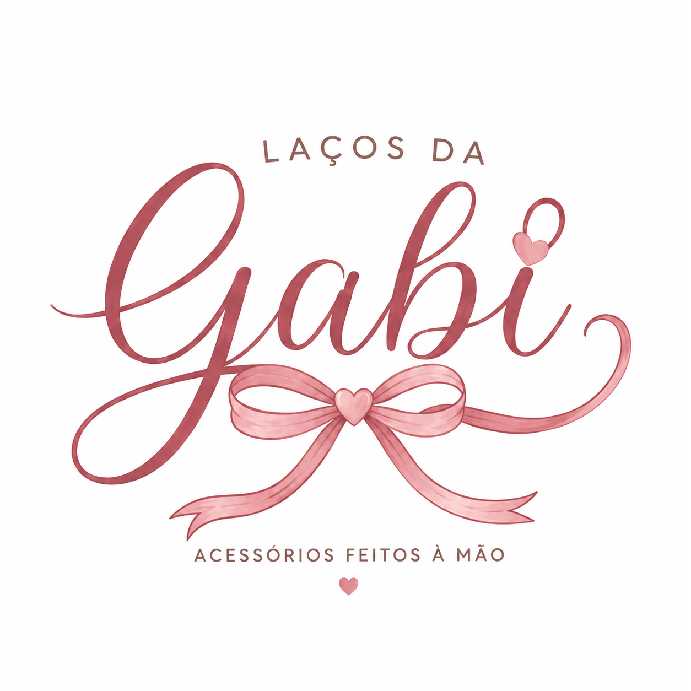

🎀 Em construçãoEstamos preparando algo especial pra você
Esta página ainda está sendo caprichada. Enquanto isso, fale com a Gabi pelo WhatsApp ou acompanhe as novidades no Instagram. 💕

🎀 Em construçãoEsta página ainda está sendo caprichada. Enquanto isso, fale com a Gabi pelo WhatsApp ou acompanhe as novidades no Instagram. 💕